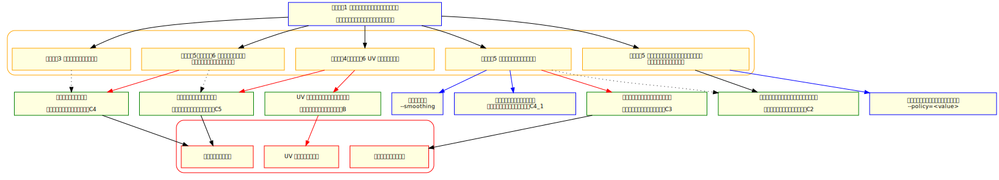

ここでは LOD モデルの生成について説明します。下記の項目について説明する事で、平易にご利用頂ける事を目的としています。
主に、地形データを用いた説明を行いますが、同様の考え方でキャラクタデータのリダクションも行う事が出来ます。説明にあたり、下記ドキュメントの内容を適宜引用します。
ポリゴンリダクション説明書 に、リダクションの実装情報やパラメーターについての詳細な解説があります。
実行時パラメーターについては、中間ファイルオプティマイザ に記載されています。
このチュートリアルでは、
"%NINTENDO_SDK_ROOT%\Samples\Sources\Applications\G3dDemo\Resources\town\bg_WhiteTown\bg_WhiteTown.fmdb"
(以下 Town モデル、または単に Town と呼びます)
に対して適切なリダクションを行うにあたって、どのようにしてパラメーターを適用していくか？を実際の実行結果と図を用いて説明していきます。
最終的な実行結果は、図1_1 の様になることを目的とします。
|
|
|
|---|---|
| 図1_0 リダクション前（137687 ポリゴン） | 図1_1 リダクション結果（34368 ポリゴン） |
ここで、最初にパラメーター決定のためのフローチャートを示します。
フローチャート中のパラメーター名はチュートリアルの各ステップで示されるパラメーターと対応しています。フローチャート中のステップ番号は、このドキュメントのステップ番号に対応しています。
各ステップにパラメーターについて、効果を図を交えて説明しています。また、各ステップのリンクから詳細な技術情報および、コマンドラインパラメーターについて参照できます。
|

|
|
デフォルトパラメーター適用後の、パラメーター決定フローチャート
破線矢印：優先度低めだが効果のあるパラメーター 赤矢印：特に重要なパラメーター 青矢印：チュートリアルでは詳細解説を行っていない。使う場面は少ないと想定しているパラメーター |
以下にフローチャート中で与えられたパラメーターについて掲示します。それぞれのパラメーターについては、各ステップで再度、提示し解説を加えます。
以下のフォルダに含まれているバッチファイルにモデル中間ファイルをドラッグ & ドロップすることにより、任意のファイルに対して各パラメーターでポリゴンリダクションを実行する事が出来ます。
%NINTENDO_SDK_ROOT%\Samples\Sources\Tools\3dTools\3dIntermediateFileOptimizer\PolygonReductionTutorial
様々なパラメーターセットの組み合わせを試す前に、パラメーターEをほどほどの結果が得られるプリセットとして、削減率を必要に応じて変更し、リダクションを試してみてください。